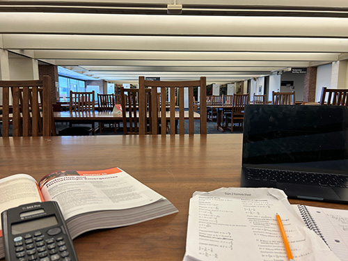

Experience Review
Rutgers’ Student Looking for a Quiet Study Spot? – Try the Third Floor of the LSM

- Campus: Busch
- Address: 165 Bevier Road, Piscataway, NJ 08854-8009
- Public hours: 8am-7pm Monday-Thursday | 8am-10pm Friday | 1pm-6pm Saturday | 2:30pm-10pm Sunday
- Student hours: 8am-12am Monday-Thursday | 8am-10pm Friday | 1pm-6pm Saturday | 2:30pm-10pm Sunday
The third floor of the Library of Science and Medicine has been denoted the “quiet floor.” As I aim to map and document the uncharted, daily, environment of this library from a boots-on-the-ground perspective, I decided the best way to understand the ecosystem of the third floor was to spend the day there.
After climbing up the three flights of stairs to the third floor, a sign on the door greets you with the phrase “Please, no talking on this floor; Quiet study only.” I discovered that this sign is posted all around the third floor, in case one forgets, which, I observed, happening more often than you may think at a college where all the students are presumably literate.
Over my time on the third floor, I recorded a number of things that I liked and found positive about the floor. For example, I felt that the temperature was well maintained, being neither too hot nor too cold like the way some other Rutgers’ buildings are prone to being. I also liked that, for the most part, it is pin-drop quiet; I heard only a few small conversations breaking the silence throughout the duration of my stay. I also found, on the day I went, that the floor was not busy, and I had no problem finding a place to study. Whether this changes throughout the semester, during times like finals week, will require further observation. The desks are wide, so I can sprawl out the contents of my backpack. There is a large window in the front of the library. I enjoyed being able to see the sun on the brisk, spring day I decided to carry out this study.
The “quiet floor” is not without its negatives. The view itself provided by the window--a muddy, nearly tree-less field of Busch campus--leaves much to be desired, especially compared to the views provided from other buildings, particularly on the College Ave and Cook/Douglass campus. I can also imagine one might want more group study rooms on the floor, as there are only about 3, though in my opinion there should be none, as it is, after all, the “quiet floor,” and sound often travels out of these rooms. I think these already existing study rooms could benefit from some soundproofing, to ensure that the “quiet floor” is kept quiet. I am also not a fan of the florescent lights that shine throughout the entire floor.
If you, like me, find yourself studying often, and require silence to focus, the third floor of the Library of Science and Medicine is for you. It is rarely full, the climate is well controlled, and the location is convenient if you are a STEM student, who has many classes on the Busch campus.